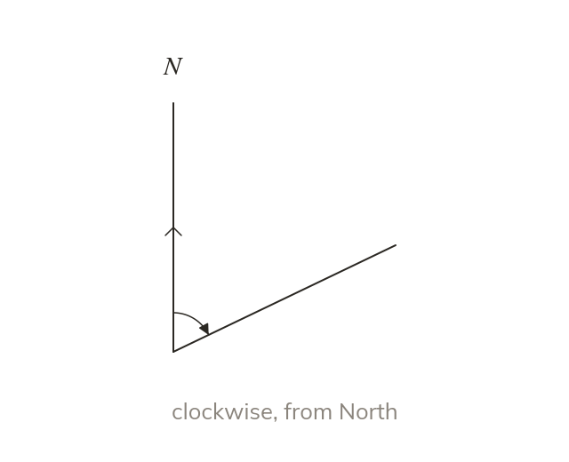

Definition
A bearing is an angle measured CLOCKWISE from North. It is always written with three figures: not
A bearing is an angle measured CLOCKWISE from North, at the point you are measuring from. It is always written with three figures, so is written and is written